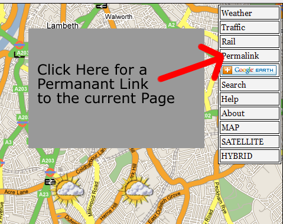

Guide to Permalinks
What are they?
Permalinks are often seen on Weblogs to permantly link to an ondividual post. On this website they link to an individual view of the map with certain features loaded.
To create a permanant link to a single map view just click the Permalink link to the top rightof the web page, the page will reload at the same view but with an absolute URL for that view which you can bookmark. It will remember the centre location, and the zoom level, the currently selected weather icon (and day, although the day will be relative to every day you view the page, so day=2 will always show tomorrows weather). It will also remember the currently selected Live Departures board if applicable. 
In the both versions of the site you can currently get it to remember if you have clicked open a live departure board marker, or a weather marker.
e.g the weather in telford is:
e.g the train running times at telford central are:
http://bbc.blueghost.co.uk/site4.php?type=rail&ldb=y&marker=0&lon=-2.44111&lat=52.681052&zl=2
Further ideas you could use:
- Want to see if there are any major delays on your local commute, just zoom to the appropriate level, choose the relevant overlay and click permalink: you could then bookmark this page and look at it in the morning:
- e.g Local rail problems between Shrewsbury and Wolverhampton
- Station markers for between Shrewsbury and Wolverhampton, click on one to see if there are any other problems
- Road problems between Shrewsbury and Wolverhampton (doesn't currently automatically show delays, need to click on the white county markers and select Show Delays)
- Do i need to take the umbrella in to work (no doubt yes:) ):
Any Comments then email me @